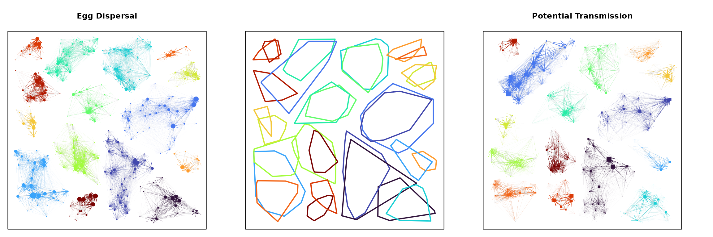

Communities
Movement
community.RmdThe matrices describing movement are complex object that we can analyze using methods from network analysis. An R package called igraph was developed for this, and there are many other packages that can do this. To take advantage of this functionality, we must first re-encode the graphs in a form. Most of the methods are developed to analyze simple graphs:
Graphs
-
ramp.microincludes a function calledmake_all_graphsthat creates a graph object for each one of the movement matrices.ramp.micro::make_graph_obj(M)is the function that creates and analyzes an adjacency matrix as a graph:igraph::graph_from_adjacency_matrix(M)-> Greturns a graph that can be analyzedigraph::clusters_walktrap(G)returns an analysis of the community structure using the walktrap algorithmigraph::clusters_greedy(M %*% t(M))-> Creturns an analysis of the community structure of the symmetric weighted graph
These graph objects are all attached by name to
model$graphs. Note that these analysis are all run by
calling ramp.micro ::
basic_analysis
set.seed(24328)
bb = unif_xy(256, -17, 17)
qq = unif_xy(289, -17, 17)
ker_b = make_kF_exp(k=2, s=1, gamma=1.5)
ker_q = make_kF_exp(k=2, s=2, gamma=2)
dispO = list(kFb=ker_b, kFq =ker_q)
bq_mod1 = setup_model(b=bb, q=qq, dispersal_opts = dispO)
bq_mod1 <- basic_analysis(bq_mod1)
par(mar = c(1,1,4,4), mfrow=c(1,3))
plot_subgraph(bq_mod1, bq_mod1$graphs$GG_graph, stretch=0.1, min_edge_frac=0.1, cut=15, mtl = "Egg Dispersal")
with(bq_mod1, frame_bq(b,q))
add_hulls(bq_mod1, bq_mod1$graphs$GG_graph, stretch=-0.01, min_edge_frac=0.1, cut=15)
add_hulls(bq_mod1, bq_mod1$graphs$VC_graph, stretch=-0.01, min_edge_frac=0.1, cut=15,)
plot_subgraph(bq_mod1, bq_mod1$graphs$VC_graph, stretch=0.1, min_edge_frac=0.1, cut=15, mtl = "Potential Transmission")